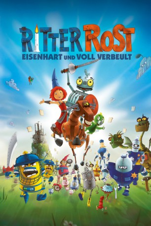

#5006 Ritter Rost
Alternativ: Ritter Rost - Eisenhart und voll verbeult
 
 IMDB-Wertung: 4.6 / 10
IMDB-Wertung: 4.6 / 10  Metascore: 0
Metascore: 0 
Ritter Rost ist das Unglaubliche gelungen: Unerwartet hat er das große Ritterturnier gewonnen, ausgerechnet im Duell gegen Prinz Protz, den eigentlich unschlagbaren Favoriten. Der erweist sich als schlechter Verlierer und beschuldigt Ritter Rost des Diebstahls und Betrugs. König Bleifuß entzieht Rost daraufhin seine Ritterlizenz und lässt seine Eiserne Burg schließen. Es kommt noch schlimmer: Sogar Burgfräulein Bö, sonst verlässliche Retterin in der Not, wendet sich von ihm ab. Nur auf die Freundschaft von Drache Koks und Pferd Feuerstuhl kann sich Ritter Rost verlassen: Gemeinsam wollen sie die Ehre des Ritters wieder herstellen und das Herz der holden Bö zurückerobern. Dabei erleben sie das größte Abenteuer ihres Lebens.
Jahr: 2013
Dauer: 83 Minuten
FSK:
Land: Deutschland Studio: UFATonspuren:
Untertitel:
Auflösung: 720p (1280x720) Größe: 2191 MB
Genre: Animation/Trick, Familie
Regisseur: Thomas Bodenstein, Hubert Weiland, Nina Wels
Drehbuch: Graham Chapman
Soundtrack:
Darsteller:
 Rick Kavanian als Ritter Rost
Rick Kavanian als Ritter Rost- Anita Höfer als
- Carolin Kebekus als Burgfräulein Bö
 Christoph Maria Herbst als Prinz Protz
Christoph Maria Herbst als Prinz Protz Tom Gerhardt als Brenner Feuerzange
Tom Gerhardt als Brenner Feuerzange- Detlev Redinger als Brutus Feuerzange
- Dustin Semmelrogge als Koks
- Hartmut Neugebauer als König Bleifuß der Verbogene
- Ulrich Frank als Ratzefummel der königliche Hofschreiber
- Pierre Peters-Arnolds als Ehrlicher Enzo
- Isabella Leicht als
- Shirin Lotze als
- Julia Lowack als
- Antje Nicolai als
Datei: X:\Kinder Collections\Ritter Rost\Ritter Rost (2013, FSK, 1280x720).mkv seit 08.12.2016
Festplatte: Kinder-Filme+Trick
 Alle Filme aus Gruppe 'Kinder Collections\Ritter Rost'
Alle Filme aus Gruppe 'Kinder Collections\Ritter Rost'